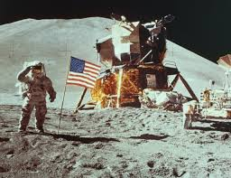

NASA | |||
|---|---|---|---|
|  |
O Programa Apollo, também conhecido como Projeto Apollo, foi um conjunto de missões espaciais coordenadas pela Nasa (agência espacial dos Estados Unidos) entre 1961 e 1972 com o objetivo de colocar o homem na Lua. O projeto teve seu momento mais emblemático com o pouso da Apollo 11 no solo lunar em 20 de julho de 1969. A missão incluiu onze voos tripulados (até a Apollo 7, todas as missões foram não tripuladas). Inclui-se aí o que ficou conhecido como "Apollo 1", em homenagem aos astronautas Virgil "Gus" Ivan Grissom, Edward Higgins White II e Roger Bruce Chaffee, que morreram no solo em um incêndio, dentro da cabine de comando. O objetivo de explorar a Lua foi abandonado em dezembro de 1972, com o voo da Apollo 17. Os motivos para esta decisão foram tanto a falta de verbas, cortadas pelo congresso, quanto o desinteresse da opinião pública estadunidense com o projeto. Ainda que tenha havido três missões tripuladas Skylab que usaram a nave Apollo e uma missão Apollo 18 (Apollo-Soyuz), estas não tinham como objetivo chegar à Lua. A nave Apollo foi abandonada em 1975 em detrimento do uso de um veículo reutilizável (o Ônibus Espacial; em Portugal: Vaivém Espacial), que voaria pela primeira vez em 1981. Em 2005 a NASA anunciou a retomada das viagens à Lua utilizando naves semelhantes às naves Apollo em substituição aos ônibus espaciais.
|